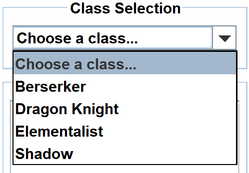
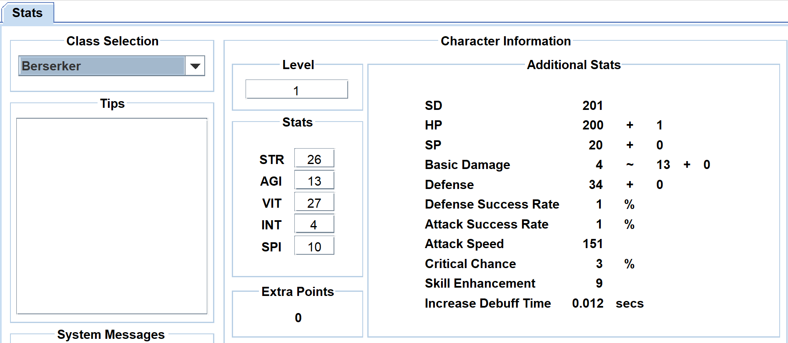
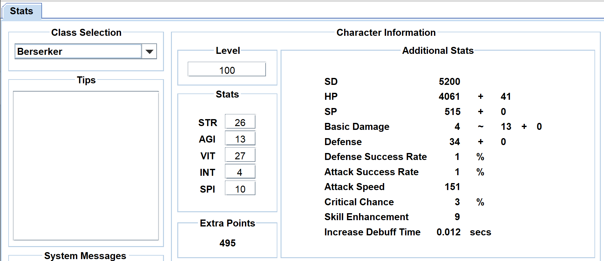
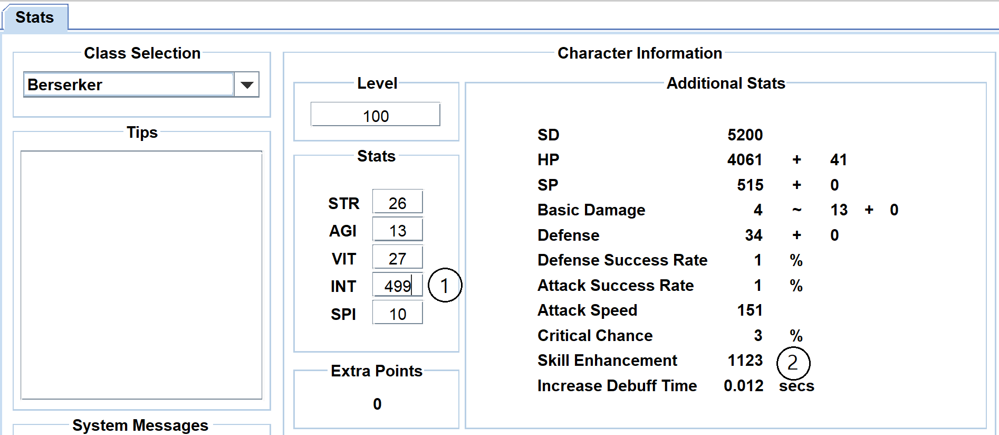

Para iniciar um personagem, o usuário deve selecionar uma classe. Role até a caixa suspensa na seção "Seleção de classe" e clique na seta para baixo. Um menu suspenso aparecerá e agora o usuário pode selecionar uma turma disponível.

A subseção "Estatísticas adicionais" na seção principal "Informações do personagem" será atualizada para mostrar as estatísticas básicas do personagem selecionado, como mostrado abaixo.

Antes de o usuário começar a editar as estatísticas, ele deve editar o nível dentro da caixa na seção "Nível". O usuário pode clicar na caixa, pressionar 'Backspace' para remover o padrão '1', digite qualquer número de 1 a 195 e, em seguida, pressione 'Enter'. Pressionar 'Enter' ajustará as informações nas seções "Pontos extras" e "Estatísticas adicionais", como mostrado abaixo.

O usuário pode editar as estatísticas na seção "Estatísticas", abaixo da seção "Nível", clicando dentro da caixa à direita da estatística correspondente. A partir daí, o usuário pode 'Backspace' dentro da caixa para remover qualquer número predefinido, digitar os números de sua escolha e pressionar 'Enter'. Pressionar 'Enter' atualizará automaticamente as informações na seção "Estatísticas adicionais", como mostrado abaixo (Número 1 e 2).
